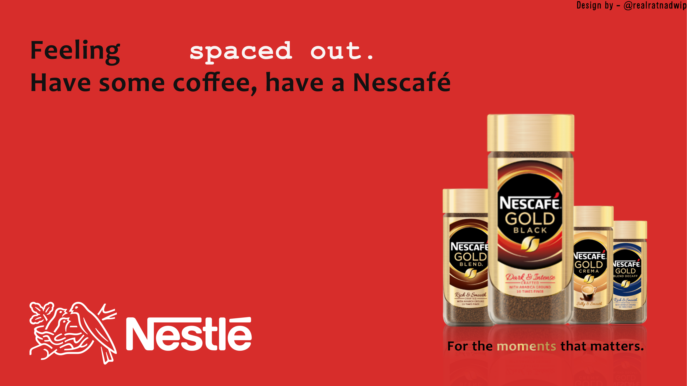
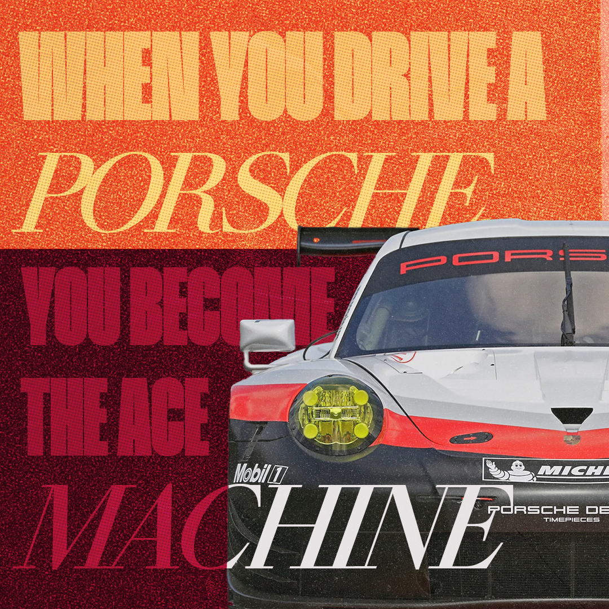

What is Digital Art?
All of the visual works below are original digital creations made using Adobe Photoshop — an industry-standard software for image editing, digital painting, graphic design, photo manipulation, illustration, and more.
While these artworks were created in Photoshop, the creative process shares common ground with other 2D tools such as Krita, Procreate, GIMP, or Corel Painter. The heart of digital art lies not in the software, but in the artist’s vision, creativity, understanding of composition, color, light, and storytelling.
Digital art is a dynamic and expressive field that bridges technology and imagination. From advertising and publishing to concept art, social media content, and visual storytelling, Photoshop plays a crucial role in how we communicate visually in the modern world. My personal interest lies in exploring visual impact through layout, color harmony, and creative effects — especially within the realms of photo manipulation, illustration, and graphic design.
This gallery showcases a variety of my work — each piece is an exploration of visual storytelling through digital design. Whether you're an aspiring designer, an art enthusiast, or someone curious about learning Photoshop, I hope these works provide insight into what’s possible with dedication and creativity.
If you’re new to digital art and want to get started, I recommend checking out Photoshop’s official website or reading up on graphic design fundamentals. There’s a vast world of tutorials, communities, and tools to help you dive in.
Scroll down to explore the gallery and see what can be achieved with passion, practice, and pixels.

